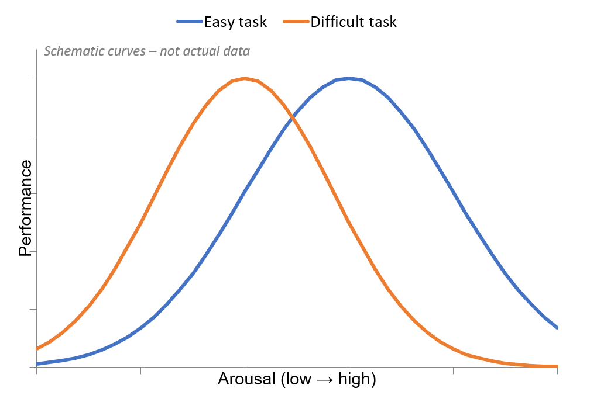
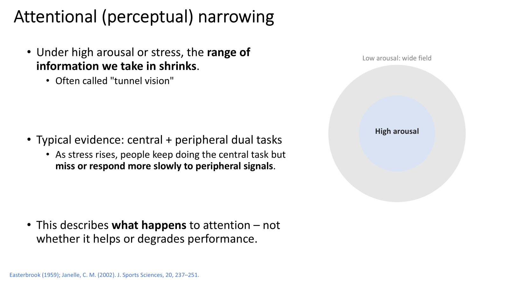
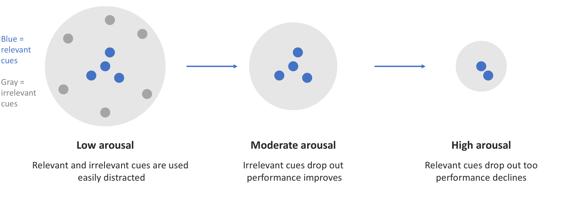
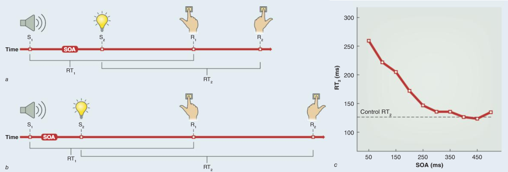
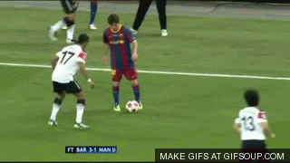

Attention as a Limited Resource
We can only attend to — and do — so much at once. This lesson builds the core theories of why attention is limited, and shows how competing tasks interfere, how arousal shapes performance, and why none of it is simply a matter of trying harder.
These interactive lessons were built by Dr. Kuznetsov using AI tools, with extensive input from and review by the instructor, who is responsible for their content and accuracy.
Learning objectives
You should be able to:
- 1Distinguish the two meanings of attention — selective attention (what we attend to) and attention as capacity (how much we can do at once).
- 2Explain why doing two tasks at once can cause interference, using capacity theory (Kahneman) and multiple-resource theory (Wickens).
- 3Describe how arousal affects attention and performance, including the inverted-U, attentional narrowing, and the cue-utilization hypothesis.
- 4Explain the psychological refractory period (PRP) and what it reveals about a central bottleneck in response selection.
Tap as fast as you can — then add a second task
Before we get into the theory, let’s do a quick demo to feel what it’s like when attention has to be shared between two tasks at once.
You’ll tap inside the pad below with your index finger, as fast as possible for 15 seconds, under three conditions. Move into the pad and make your first tap to start the clock — the page counts for you. Do all three; we’ll come back to your numbers later in the lesson, and again in Lesson 2 to calculate your dual-task cost.
You just did two things at once — and something gave
Almost everyone taps fewer times when a second task is added, and the two secondary tasks usually don’t cost the same amount. Hold onto these questions — the theories in this lesson answer them:
- ?Which task suffered — the tapping, the second task, or both?
- ?Which second task hurt tapping more — counting or tracing? Why might that be?
- ?Did you catch yourself prioritizing one task over the other?
- ?Would it have mattered if the second task were just humming a tune?
You can do two things at once — but performance suffers, and how much it suffers depends on what the two tasks demand. Explaining that pattern is what a theory of attention has to do.
Attention as a Limited Resource
Two meanings of “attention”
The word “attention” is used two different ways in motor control. This lesson covers both. Flip each box to see more.
A sensory bottleneck (Broadbent, 1958)
The first explanations of why attention is limited were filter (bottleneck) models: sensory information passes through a single channel, one item at a time (Broadbent, 1958). The limit is structural — only one input can be attended at a time. Click each stage to see what it does.
Click any stage of the model above to read what it does.
Broadbent and the researchers after him studied selective attention with dichotic-listening tasks — a different message played to each ear — which is why the model is drawn with ears as the example inputs. In principle the same bottleneck logic applies to other senses too (e.g., competing visual inputs).
Broadbent, D. E. (1958). Perception and Communication. Pergamon Press.
The cocktail party problem
Broadbent’s strict filter ran into trouble: some unattended information still gets through.
Following one conversation in a noisy room is the filter at work — you tune the rest out.
But if something personally relevant appears in the background — your own name, or “fire!” — you notice it, even though you weren’t attending to that channel (Moray, 1959). A filter that fully blocks unattended input can’t explain that.
Treisman updated the bottleneck model: the filter turns unattended input down rather than off (attenuation). Quiet background channels are weakened but not silenced — so a salient, meaningful signal can still break through.
Cherry, E. C. (1953). JASA, 25, 975–979. · Moray, N. (1959). QJEP, 11(1), 56–60. · Treisman, A. M. (1964).
Attention as a limited resource pool
Bottleneck theories were the first explanations of why attention is limited: the limit is structural, because only one channel can be attended at a time. But a single channel can’t explain something you just did — in the tapping demo you clearly did two things at once, even though performance suffered. One channel can’t account for that; a shared pool can.
Three pictures of the limit, from one channel to several pools:
Only one input gets through the filter.
All tasks draw on one supply of effort.
Separate supplies for different kinds of processing.
We’ll examine both pool theories — but let’s go into more detail on the single-pool model first (Kahneman, 1973).
Kahneman’s single-pool capacity model
Attention is a single limited pool of capacity that can be shared among activities. Click each part of the model to see what it does — and how arousal sets the size of the pool.
Click any part of the model above to read what it means.
Interference occurs when the combined demands of your tasks exceed the available capacity.
Kahneman, D. (1973). Attention and Effort. Prentice-Hall.
Arousal and the inverted-U
Arousal is the overall level of CNS activation (reflected in heart rate, blood pressure, tremor). Performance rises with arousal up to a point, then declines — the classic inverted-U (the Yerkes–Dodson pattern). The best performance sits at an intermediate arousal level.

In Kahneman’s terms: on the rising side, more arousal means more available capacity. On the falling side, the allocation policy gets worse — attention narrows, and it becomes harder to separate relevant from irrelevant information. (The exact shape isn’t fixed: some people perform better “under pressure.”)
Yerkes, R. M., & Dodson, J. D. (1908). J. Comparative Neurology & Psychology, 18, 459–482.
Factors that raise or lower arousal
Many things push arousal up or down — useful to know clinically, because you can often adjust a patient’s arousal toward the level a task needs. For each source below, guess an example, then tap a cell to reveal it.
| ▲ Increases arousal | ▼ Decreases arousal | |
| Substances | revealCaffeine, nicotine, stimulants | revealAlcohol, sedatives, beta-blockers |
| Environment | revealLoud noise, bright light, cold | revealQuiet, dim light; heat & stuffy rooms |
| Situation | revealAudience, competition, being evaluated, rewards, time pressure, threat, novelty | revealFamiliar, low-stakes, unobserved settings |
| Emotion | revealAnxiety, excitement, anger, fear | revealCalm, contentment |
| Body state | revealAcute exercise, good sleep, peak time of day | revealFatigue, sleep loss, the early-afternoon dip |
| Task | revealHard or demanding tasks | revealMonotonous, repetitive tasks (vigilance) |
| Strategies | revealPsych-up routines, upbeat music, energizing self-talk | revealSlow diaphragmatic breathing, progressive muscle relaxation, imagery |
Attentional (perceptual) narrowing
Under high arousal or stress, the range of information we take in shrinks — often called “tunnel vision.”

Typical evidence — central + peripheral dual tasks: as stress rises, people keep doing the central task but miss or respond more slowly to peripheral signals.
Importantly, this describes what happens to attention — not whether it helps or degrades performance.
The overload you may have felt while tapping-and-counting is this same narrowing: as load climbs, the “extra” information (even a helpful hint) stops getting through.
Easterbrook, J. A. (1959). Psychological Review, 66, 183–201. · Janelle, C. M. (2002). J. Sports Sciences, 20, 237–251.
The cue-utilization hypothesis
Easterbrook’s (1959) hypothesis about perceptual narrowing: as arousal rises, the number of cues a person uses shrinks.

Blue = relevant cues, gray = irrelevant. At low arousal all cues are used (easily distracted); at moderate arousal irrelevant cues drop out (performance improves); at high arousal relevant cues drop out too (performance declines).
Tasks that depend on many cues — complex skills and open, unpredictable environments — suffer sooner as arousal climbs, because they have more relevant cues to lose.
Easterbrook, J. A. (1959). Psychological Review, 66, 183–201.
Wickens’ multiple-resource theory
Wickens argued attention capacity is not one single pool but several. Different tasks draw on separate resources, and they interfere more when they share the same resource. Four dimensions define the pools — flip all four to reveal the rule.
Flip all four boxes to reveal the rule.
More overlap between two tasks on these dimensions → more interference. Two visual-spatial-manual tasks collide hard; a visual-manual task and an auditory-vocal task share much less.
Wickens, C. D. (2002). Theoretical Issues in Ergonomics Science, 3, 159–177.
Talking while driving
A conversation interferes more than the radio, even hands-free (Strayer & Johnston, 2001): in a driving simulator, phone conversations led to more missed signals and slower reactions; listening to the radio did not.
Why? A conversation demands active language processing and response planning; the radio can be heard passively. Hands-free devices remove the manual conflict (your hands are free) but not the cognitive one — which is where the real cost lives.
Strayer, D. L., & Johnston, W. A. (2001). Psychological Science, 12, 462–466.
Which second task cost more — and why?
Look back at your three tap counts from the demo. For most people, tracing a star cuts tapping more than counting does. Predict why using Wickens’ rule, then flip.
The psychological refractory period (PRP)
Even tasks that use different resources (say, a manual and a vocal response) still slow each other down. Why? The PRP paradigm presents two stimuli close together in time and asks for a fast response to each. The gap between the two stimuli is the stimulus-onset asynchrony (SOA).

Source: Schmidt & Lee, Motor Control and Learning.
On the field
An offensive player fakes one direction (signal 1), then moves the opposite way (signal 2). Each signal makes the defender start a different response — so the response to the second signal is slower than with no fake, especially when the two signals come close together. That delay is the PRP, and it’s why a good fake works.

Pashler, H. (1994). Psychological Bulletin, 116, 220–244.
Summary & the next step
- 1Attention is limited in two senses — what we select, and how much capacity we can spread across tasks.
- 2Theory moved from a single bottleneck (Broadbent → Treisman) to a shared pool — one pool (Kahneman) or several (Wickens). Tasks interfere most when they share the same resource.
- 3Arousal sets available capacity; performance follows an inverted-U, and past the peak, attention narrows and relevant cues get lost.
- 4A central bottleneck at response selection (the PRP) means even unrelated tasks slow each other down.
Lesson 2 — Measuring Attention Demands: the dual-task paradigm, dual-task cost (you’ll compute yours from the tapping data you just recorded), probe reaction time, and why dual-task tests matter clinically as a marker of fall risk.
Your passphrase for this lesson is SHARED-POOL. Enter it in the Canvas quiz to record completion.